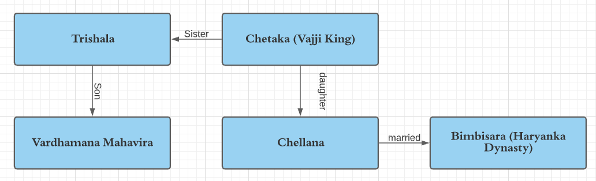

BUDDHISM AND JAINISM
Introduction
-
Sixth century BCE witnessed the growth of two great
alternative religions: Buddhism and Jainism.
-
These religions emphasized that true happiness does not lie in
material prosperity or performance of rituals, but in
nonviolence, charity, and good social conduct.
Buddhism
Life of Buddha
-
Gautama Buddha was born as Siddhartha in 563 BCE on Vaishakha
Poornima Day at Lumbini (near Kapilavastu, now situated in the
foothills of Nepal) to Suddhodana (chief of republican Sakya
clan, who ruled from Kapilavastu in the Kosala Kingdom).
-
His mother Mahamaya (princess of the Kosala dynasty), gave
birth and died seven days after his birth. Siddhartha was thus
raised by his step-mother Gautami.
-
It is believed that soon after he was born, a prophecy
foretold that he would become a world renouncer. His
father wanted to keep him away from the path of renunciation,
hence he shielded him from all sorrows, and brought him up in
luxury and comfort. He was married at an early age to
Yosodhara from whom he had a son Rahul.
-
He suspected that there was more to life, so he snuck out of
the palace a few times. On these travels, he encountered an
old man, a sick man, and finally a corpse. Having realized the
ubiquity of suffering, Siddhartha left the palace at the age
of 29, renounced the crown and sought out all the holiest men
to try to find out how it could be possible that life would
come to such a terrible end. This event is known as
Mahabhinishkramana
/Great Renunciation
-
Gautama first studied under two teachers of meditation, namely
Alara Kalama and Uddaka Ramaputta, learning meditation and
philosophy.
-
Finding these teachings to be insufficient to attain his goal,
he turned to the practice of severe asceticism until his body
was almost emaciated. Realizing that austerities could not
lead to realization, he abandoned them.
-
At the age of 35, he ultimately attained
Nirvana/Enlightenment at Gaya, Magadha (Bihar) under a
Peepal tree, on the banks of river Niranjana (also called
Phalgu river), and came to be known as the Buddha, the
Enlightened One.
-
Buddha delivered his first Sermon at Sarnath to five of his
disciples. This event is known as
'DhammaChakka-Pavattana' meaning ‘turning the wheel of
dharma’. His five disciples soon realized the truth themselves
and became Arhats.
-
Buddha wandered about, teaching his doctrine for over four
decades, and established an order of monks and nuns known as
the Sangha. He finally attained
Mahaparinirvana or Parinibbana at the age of 80 at
Kusinara (lying in Mallas). It is believed that his last words
were,
“All composite things decay, strive diligently”.
Buddha's life is depicted with five smbols:
| Symbol |
meaning |
| Lotus and Bull |
Birth |
| House |
Mahabhinishkramana / Renunciation |
| Bodhi Tree |
Nirvana / Enlightenment |
| Wheel |
Dhammachakra Pravartana / First Sermon |
| Stupa |
Mahaparinirvana / death |
Doctrines of Buddhism
The core of Buddha’s doctrine is expressed in the Arya Satyas
(Four Noble Truths), Ashtangika-Marga (Eight-Fold Path), the
doctrine of Middle Path, Social Code of Conduct, and Belief in
Nirvana.
Four Noble Truths (Arya Satyas)
- The world is full of sorrows (Sabbam Dhukkam).
- The source of suffering is desire.
- To stop suffering, you must rid yourself of desire.
-
This can be achieved by following the 8-fold path (Ashtangika
Marga).
Eight-Fold Path (Ashtangika marga)
- Right understanding
- Right thought
- Right speech
- Right effort
- Right action
- Right livelihood
- Right mindfulness
- Right meditation
Code of Conduct
These are the vows or duties of every follower of Buddhism.
- Do not covet the property of others.
- Do not commit violence.
- Do not use intoxicants.
- Do not speak a lie.
- Do not indulge in corrupt practices.
The Doctrine of Middle Path
It means that the man should avoid extremes of both a life of
luxury and a life of severe asceticism and acquire a middle
path. Also called
Madhya Marga or Madhayama Pratipada.
Belief in Nirvana
Also known as moksha or salvation. It refers to a belief in the
concept of ultimate bliss, whereby the person gets freedom from
the cycle of birth and death.
The Three Jewels
All forms of Buddhism revere and take spiritual refuge in the
"three jewels" (triratna): Buddha, Dharma and Sangha.
Different Schools of Buddhism
| Hinayana (Theravada) |
Mahayana |
Vajrayana |
|
Literally means ‘the Lesser Vehicle’ and
Theravada signifies
‘Doctrine of the Elders’.
|
Literally means ‘the Greater Vehicle. The terms
‘Mahayana’ and ‘Hinayana’ were given by the Mahayana
school.
|
Literally means ‘Vehicle of Thunderbolt’. |
|
It is considered the orthodox school and to be
truer to Gautama Buddha’s teachings than Mahayana.
|
It is the heterodox school of Buddhist
philosophy. It originated later than Hinayana.
|
It was a form of Buddhism, which appeared in eastern
India in the eighth century and was finally established
in Tibet in the 11th century, as a result of a mission
sent from the great Vajrayana monastery of Vikramshila.
|
|
Its scriptures are in Pali, the language that
Buddha taught in.
|
Its scriptures are in Sanskrit. |
The Vajrayana texts use a highly symbolic language.
|
|
A School of Buddhism which treats Buddha as nothing more
than a human being. Does not believe in idol worship and
tries to attain
individual salvation through self-discipline and
meditation. Ultimate aim of Hinayana is thus nirvana.
|
A school of Buddhism which treats Buddha as god and
worships idols of Buddhas and Bodhisattvas. Mahayana
believes in
universal liberation from suffering for all
beings (hence the ‘Great Vehicle’). Ultimate aim of
Mahayana is ‘spiritual upliftment’.
|
Its followers believed that salvation can be best
attained by acquiring the magical power, which they
called
Vajra.
|
|
At present, Theravada Buddhism is found in Sri Lanka,
Myanmar, Thailand, and other parts of South East Asia.
|
At present, Mahayana Buddhism is found in Japan, China,
and other Asian countries.
|
It became popular in eastern India, particularly Bengal
and Bihar and is predominant in the Himalayan nations of
Tibet, Nepal, Bhutan, and also Mongolia.
|
| Ashoka patronized Hinayana. |
Kanishka patronized Mahayana and later,
Harsha Vardhana supported it as well.
Palas of Bengal were the last great patrons.
|
- |
Buddhist Councils
| Buddhist Council |
Time |
Place |
Ruler |
President |
Significance |
| First |
483BCE |
Rajgriha |
Ajatasatru |
Mahakassappa |
Held soon after the death of the Buddha, it was at this
council that the Buddha’s teachings were divided into
three categories or ‘baskets’ (pitaka).
|
| Second |
383 BCE |
Vaishali |
Kalashoka |
Sabbakami |
- |
| Third |
250 BCE |
Pataliputra |
Ashoka |
Mogaliputta Tissa |
Origin of Theravada school.Tripatika coded in Pali
language.
|
| Fourth |
1st Century CE |
Kashmir |
Kanishka |
Vasumitra |
Buddhism divided into the Mahayana sect and the Hinayana
sect.
|
Buddhist Literature
- Mostly written in Pali language
- Tripitakas:
-
Vinaya Pitaka consist rules of monastic discipline for
monks.
- Sutta Pitaka is the collection of Buddha’s sermons.
-
Abhidhama Pitaka is the philosophy of Buddha’s teachings.
-
Milindapanho - a dialogue between Milinda (Indo-Greek
ruler) and Nagasena (Buddhist Saint)
-
Dipavamsha and Mahavamsha –The great chronicles
of Sri Lanka.
Jainism
The Jaina doctrine is believed to be much older than Buddhism
and it is accepted that there are total 24 Tirthankaras.
The first founder Tirthankara
Rishabhadeva (emblem – bull), whose reference is also
found in Rig Veda and Vayu Purana. 23nd Tirthankara is believed
to be Parshvanatha (of Benaras) having the emblem of the
snake. The 24th Tirthankara was Mahavira, who had the
emblem of the lion.
Life of Vardhamana Mahavira
-
Vardhamana is considered the 24th and last Tirthankara or
Jina. He came to be known as Mahavira (great
hero). He was also known by the names of
Jitendriya (one who has conquered his inner desires)
and Arhant (worthy).
-
According to tradition, he was a contemporary of the Buddha
and was born in c. 599 BCE at a village named Kundagrama near
Vaishali (capital of Videha).
-
Like the Buddha, he was born in a Kshatriya clan. His father
Siddhartha was the chief of the Jnatjriya clan and his mother
Trishala was lichchhavi princess and sister of Vajji
(vaishali) King Chetaka. His family was connected with the
royal family of Magadha, as Chetaka’s daughter was married to
Bimbisara (Haryanka Dynasty of Magadha).
-
Initially, he led a householder’s life, married Yashoda, and
had a daughter named Priyadarshana. But he renounced the world
in search of truth at the age of 30 and became an ascetic.
-
He wandered for 12 years, practicing severe austerities,
fasting, and meditation. At the age of 42, it is believed that
on the banks of Rijupalika river, he attained
Kaivalya or kevalajnana (omniscience or infinite
knowledge).
-
Delivered his First Sermon at Pava to eleven disciples known
as Ganddharas.
-
He passed away and became a siddha (fully liberated) at
the age of 72 years in c. 527 BCE at Pavapuri near Patna.

Teachings of Mahavira
-
Rejected the authority of the Vedas and did not believe in
existence of God.
-
He believed that every object possesses a soul, so he
professed strict non-violence.
-
Attainment of salvation by believing in penance and dying of
starvation.
-
Universal brotherhood (equality) and non-belief in caste
system.
- He believed in karma and transmigration of soul.
Main Principles
-
Non-violence (ahimsa): The principle of ahimsa
(non-violence or non-injury) is a fundamental tenet of
Jainism. It holds that one must abandon all violent activity
and that without such a commitment to non-violence all
religious behavior is worthless.
-
Many-sided reality (anekantavada): The second main
principle of Jainism is anekantavada. This doctrine states
that truth and reality are complex and always have multiple
aspects.
-
Non-attachment (aparigraha): The third main principle
in Jainism is aparigraha which means non-attachment to worldly
possessions. For monks and nuns, Jainism requires a vow of
complete non-possession of any property, relations and
emotions.
Five duties or Vows of Jainism (Pancho Mahavratas)
Jainism teaches five ethical duties, which it calls five vows.
These are called anuvratas (small vows) for Jain laypersons, and
mahavratas (great vows) for Jain mendicants.
- Non-injury (Ahimsa).
- Non-lying (Satya).
- Non-stealing (Asteya).
- Non-possession (Aparigraha).
- Observing celibacy (Brahmacharya).
Sects of Jainism
-
After the death of Mahavira, during the reign of king
Chandragupta Maurya, a severe famine led to a great exodus of
Jaina monks from Ganga valley to the deccan. This migration
led to a great schism in Jainism.
-
Bhadrabahu, who led the emigrants, insisted that
complete nudity is an essential practice of Jainism as per
Mahaviras teachings. His followers established the sect called
Digambaras (“Sky Clad”).
-
Sthulabhadra, the leader of the group, who remained in
the North allowed his followers to wear white garments. This
sect is called as the Svetambaras (“Iron Clad”).
Spread of Jainisim
In later times, Jainism was chiefly concentrated in two regions:
Gujarat and Rajasthan-Svetambara sect, Mysore—Digambara sect.
Jain Literature
-
The sacred texts of Jainism were compiled in 6th century AD at
Vallabhi (Gujarat). They are written in
Prakrit language (Ardhumagadhi Prakrit).
-
The Jain literature (of Shvetambaras) is classified as
follows:
- The twelve Angas
- The twelve Upangas
- The ten Parikarnas
- The six Chhedasutras
- The four Mulasutras.